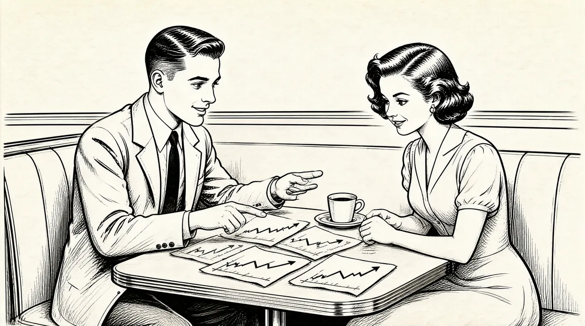

第15章 面试

沃伦在1949年夏季回到内布拉斯加，回去后做的第一件事就是在《林肯日报》找了一份工作，负责管理这份报纸在非城市地区的投递工作。他和他的朋友杜鲁门·伍德（多丽丝的男朋友）一人出一半的钱买了一辆车。沃伦在林肯市待得很舒服，早上去大学上课，然后下午开着车四处走，管理他的送报业务。在空暇时间，他会拜访当地报纸的编辑，和他们聊商业、政治和新闻行业的话题。监督管理报童是一件严肃认真的工作，因为沃伦现在是负责人了。来自6个农村县级地区的50个男孩向“巴菲特先生”报告工作情况。当沃伦雇用了比阿特利斯镇一名牧师的女儿后——他认为她会很负责地递送报纸，管理方面的挑战就来了。有三个比阿特利斯镇的男孩立马就不干了，因为沃伦把送报变成了一份女性化的工作。
在奥马哈的那个夏天，沃伦有部分时间在JCPenney服装店销售男士服饰。他重燃对女孩子的兴趣，买了一把夏威夷四弦琴，和一个女孩的男朋友展开竞争。不过，最后的结局是，沃伦手里只拿着夏威夷四弦琴，却没有俘获那个女孩。
不过，JCPenney服装店倒是一个很好的工作场所。员工们每天早上在地下室以一种非正式的方式上演一次“赛前动员会”。沃伦穿着廉价的西装，弹奏着他的新四弦琴，所有人一起唱歌，然后沃伦出发去男装区做他那份75美分每小时的工作。这家店会在圣诞期间请沃伦回来做事，仍然是让他销售男士服饰。看着成堆的服饰商品，沃伦问他的经理，怎么跟顾客介绍这些衣服。“就告诉他们这是一种精纺毛料制成的服饰，”兰福德先生说，“没有人知道精纺毛料是什么东西。”沃伦压根儿就不知道精纺毛料是什么，不过，在JCPenney服装店，他只卖过这玩意儿。
到了秋天，沃伦和杜鲁门·伍德一起租下了佩珀大街上一栋装修不错的房子，然后开始了在内布拉斯加大学的学习生活。与宾夕法尼亚大学相比他更喜欢这里的老师，他选了很多的课程，跟从他迄今为止遇到过的最出色的老师雷·戴恩学习会计课程。
那一年，沃伦的高尔夫球买卖重新开张，这次的搭档是宾夕法尼亚大学的朋友杰里·奥兰斯。沃伦会开车到奥马哈火车站，从他以前的供货商“Half-Witek”那里挑选高尔夫球。1奥兰斯是沃伦在东海岸的销售人，不过实际上，沃伦确实需要一个合伙人。他同时也投资股票，并打算卖出汽车制造商西泽–弗雷泽公司的股票。这家企业在1947年生产出第一辆汽车，不过之后却眼睁睁地看着自己的汽车市场份额从大约5%减少为不到1%。“亲爱的爸爸，”沃伦在信纸上写道，“如果说这些市场份额的变化不存在显而易见的趋势，那我的统计学就白学了。”西泽–弗雷泽公司上半年损失了800万美元，“因此，再考虑到做假账的因素，亏损可能更大。”2他和霍华德一起卖空了这只股票。
回校上学期间，沃伦去经纪商Cruttenden-Podesta公司的办公室，问一个叫鲍勃·索纳的股票经纪人在哪里交易股票。索纳看着黑板说：“5美元。”沃伦解释说，他卖空了股票——借了股票卖出去。如果价格如预期那样下跌了，那他可以把股票买回来，归还股票，获得差价赢利。因为沃伦认为西泽–弗雷泽公司会破产，如果他以5美元/股卖出了这些股票，那他就可以花几分钱把股票买回来，每股可以赚将近5美元。
我会让这个傲慢的小后生好看！索纳说：“你的年纪还不够卖空股票。”“哦，是的，”沃伦说，“我是以我姐姐多丽丝的户头做的。”沃伦说明了这只股票价格会跌到零的原因，并摆出了证据。3“他完全把我给驳倒了，”索纳说，“我毫无还嘴之力。”
沃伦等着西泽–弗雷泽公司的卖空之计生效，一直等着。在等待期间，他开始到Cruttenden-Podesta公司附近转悠。他对这个策略很有信心，西泽–弗雷泽公司最终会一钱不值，这太明显了。与此同时，沃伦和索纳还成了好朋友。
1950年春，经过3年的学习，沃伦只需要再上几节暑期班的课就可以毕业了。就在这时，沃伦做出了一个完全改变他到目前为止的生活轨迹的决定。高中毕业之后，他就认为，自己完全有资格和能力在35岁的时候实现成为百万富翁的目标，而无须接受进一步的教育。然而现在他却立志要去哈佛商学院，在受教育的过程中，他对正规的课程学业几乎没有什么兴趣，但对学习知识则很有兴趣，并认为自己大部分是在自学。不过，哈佛给了他两大重要收获：声望威信和未来的人际关系网。他刚刚目睹自己的父亲被赶出国会，而且股票经纪职业也遭遇失败。部分原因就在于他父亲往往为了自己坚定的最终理想而孤立自己，不惜牺牲人际关系。所以，沃伦选择哈佛并不意外。
沃伦非常有信心哈佛会录取他，以至于他已经迫不及待地邀请杰里·奥兰斯和他一起去读哈佛。4此外，他也认为自己可以申请到奖学金。
有一天，我在学生报纸《内布拉斯加日报》上读到一条小新闻，上面说：“今天将颁出约翰·米勒奖学金。5申请者请到商学院所在大楼的300房间。”如果你得到所选择的学校的鉴定认可，那么该奖学金将会为你提供500美元。
我去300房间，是唯一一个到场的人。那里的三名教授一直想再等等看。我告诉他们：“不，别等了，已经3点钟了。”因此，我没动一个指头就得到了这笔奖学金。
这笔从大学报纸上获得的钱让沃伦变得富裕，他在半夜起身搭乘前往芝加哥的火车，去参加哈佛的入学面试。沃伦19岁，比毕业生的平均年龄小了两岁，同时也比商学院学生的平均年龄小。他的成绩不错，但并非特别拔尖。尽管是国会议员的儿子，但他没有动用任何关系以进入哈佛。既然霍华德·巴菲特不会讨好人，也不愿受人吹捧，那么他的儿子也不会这样。
沃伦打算凭借自己对股票的了解在面试时有不俗的表现。到现在为止，无论什么时候他开口谈到股票，人们都会不由自主地听他说话。他的亲戚、老师、父母的朋友，以及同学们和所有想听他关于股票的观点的人，都是如此。
不过，他错解了哈佛的宗旨——其目标是培养领导者。他来到芝加哥，进入面试。沃伦因为自己在股票方面具有天赋而拥有自信，面试的男士通过这种对单一领域的自信一下就看到了沃伦的自我意识和他不太自信的内在。“我的样子看起来在16岁左右，而情绪的表现大概是9岁。我和进行面试的哈佛校友待了10分钟，他评估了我的能力，把我拒之门外。”
沃伦根本没有得到机会展示他的股票知识。哈佛的这位先生很有礼貌地告诉他，在几年后，他会有更好的机会。沃伦很天真，这番话并未令他十分消沉和低落。当哈佛来信拒绝他的申请时，他惊呆了。他说，他的第一个想法是：“我要怎么跟我父亲交代呢？”
虽然霍华德很吃惊，表情也不太好看，不过他对他的孩子并不苛刻。哈佛是沃伦的梦想，并不是他父亲的梦想。真正的问题可能在于，沃伦要怎么跟他妈妈交代。
虽然他们进行过交谈，但是记忆都已经模糊。不过，后来沃伦认为哈佛遭拒是他一生中关键的一幕。
沃伦几乎立刻动手研究其他学校。一天，快速翻阅哥伦比亚大学概况手册的时候，他见到两个非常熟悉的名字：本杰明·格雷厄姆和戴维·多德。
对我来说，这可是两个响当当的名字。我刚好读过格雷厄姆的书，不过，我不知道他在哥伦比亚大学教书。
“格雷厄姆的书”指的是《聪明的投资者》这本书，1949年出版。6这本书向各类投资者，不管是谨慎型还是投机型，提供实战建议，摧毁了华尔街的投资惯例和陈规，颠覆了以前股票投资在大范围内存在的一致性思维。这本书首次用老百姓都能明白的方式阐释说明，股票市场并不是通过黑魔法在运行。通过真实示例，比如北太平洋铁路、美国夏威夷轮船公司，格雷厄姆展示了如何运用一种理性和数学的方式对股票进行估值。他说，投资应该是系统化行为。
这本书迷住了沃伦。很多年来，他去市区的图书馆，查看每一本可能与股票和投资有关的书。很多书都提出了基于模型挑选股票的系统，沃伦想要一个能够可靠运行的系统。他曾经着迷于数字化分析方式——技术分析。
“我把这方面的所有书读了又读。对我影响最大的一本可能是加菲尔德·德鲁写的关于散股交易的书，7这本书非常重要，我把它读了3遍。我还看过爱德华兹和麦基的书，8那可是技术分析的圣经。我会去图书馆，把它们一口气读完。”不过，当他发现《聪明的投资者》这本书后，他反复咀嚼。和他一起租房的杜鲁门·伍德说，“他就好像找到了上帝。”9在仔细研究和思考后，沃伦有所创新和拓展，进行了自己的“价值投资”。通过他父亲的关系，他知道了一家叫ParkersburgRig&Reel的公司。他根据格雷厄姆的规则进行了研究，然后买了200股。10
根据沃伦手里所拿的哥伦比亚大学介绍手册，那位他最喜欢的作者本杰明·格雷厄姆在哥伦比亚大学讲授金融学。戴维·多德也在那儿当老师，是商学院的教学副院长、金融系系主任。1934年，格雷厄姆和多德合著了关于投资的基础教程《证券分析》。《聪明的投资者》是给外行人看的《证券分析》版本。正如哥伦比亚大学的介绍手册所说：这个世界上，没有其他城市能够提供如此多的机会，可以直接了解、熟悉实际的商业行为。在这里，学生可以和著名的美国商界领袖人物进行面对面的接触，他们中很多人会慷慨地把时间用于研究生课程、讲座和研讨会。这个城市的商业团体很欢迎学生来访。11即使是哈佛都不能提供这些。
沃伦如今决定要去哥伦比亚。但是，时间已经太晚了。
我在8月写的申请信，离开学只剩一个月，而其实我早应该这么做了。天知道我写了些什么。我可能写的是，我刚刚在奥马哈大学发现了这本册子。手册上面说你和本杰明·格雷厄姆在贵校任教，我认为，你们是站在奥林匹斯山山顶的某个地方，正笑着俯视我们其余的人。如果我能被录取，我会很高兴。我当然知道这不是一次常规的入学申请，这可能是一次非常私人的申请。
不过，以这种书面申请的方式，沃伦给人留下的印象比面试成功多了。这份申请最后到了戴维·多德的桌上，他当时是商学院副院长，主管招生。到1950年为止，多德已经在哥伦比亚大学当了27年的老师，而且，他实际上已经是著名的本杰明·格雷厄姆的初级合伙人。
多德身材瘦小、虚弱，还秃顶，一直照顾着待在家里、身有残疾的妻子。多德是基督教长老会牧师的儿子，比沃伦的父亲年长8岁。也许多德被这封申请信所透露的个人天性触动了。在哥伦比亚大学，他和格雷厄姆更感兴趣的是学生对商业和投资的偏好，而不是他们的情感成熟度。格雷厄姆和多德并不想打造领导者，他们是在教授一种特别的专业技能。
不管是什么原因，在截止日期之后，没有经过面试，沃伦就被哥伦比亚大学录取了。
[1]500美元可不是一个小数，这相当于2007年的4300美元。